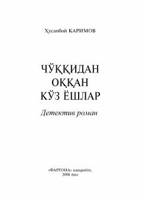

COIlmiy kashfiyot atrofida kechadigan xatarli voqealar va jinoiy to'daga qarshi kurash haqida detektiv roman.
Husanboy Karimovning ushbu detektiv romanida olimning ilmiy ishidan mo'may daromad olmoqchi bo'lgan jinoiy guruh va ularga qarshi kurashgan huquqni muhofaza qilish idoralari xodimlarining xatarlik faoliyati aks ettirilgan. Asarda jinoyatga jazo muqarrarligi hamda adolat va haqiqat tantanasi sodda uslubda tasvirlangan.